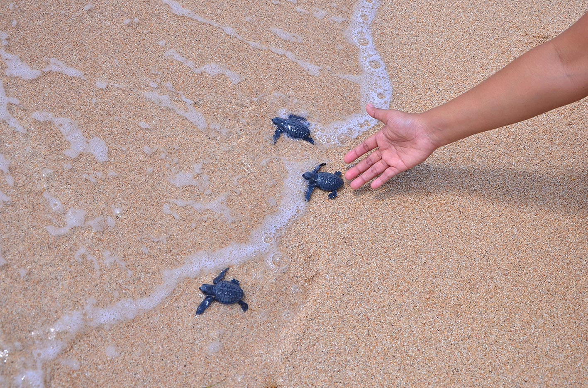

Kura-kura berperan vital dalam keseimbangan alam. Sebagai predator, kura-kura menyantap makhluk yang lebih kecil guna mengontrol populasi mereka. Beberapa jenis kura-kura juga dijadikan obat yang manjur untuk penyakit tertentu. Namun 50% spesies kura-kura asal Indonesia masuk ke dalam daftar merah The International Union for Conservation of Nature (UICN) sebagai hewan terancam punah dan rentan punah karena pemburuan liar dan kerusakan alam akibat limbah manusia.

"Karapas" diambil dari nama ilmiah tempurung kura-kura yang melindungi organ dalamnya, maka dengan itu kami berharap organisasi ini juga dapat melindungi kura-kura Indonesia yang kondisinya sangat memprihatinkan. Terdiri dari para ahli, peneliti, dan sukarelawan yang memilik kepedulian tinggi terhadap lingkungan, kami sekuat tenaga mempertahankan mereka


-
Konservasi
Kami melakukan konservasi di beberapa titik untuk merawat dan menangkar kura-kura agar dapat dilepaskan kembali ke alam
-
Edukasi
Kami melakukan edukasi tentang kura-kura yang boleh dan tidak boleh dipelihara sekaligus cara yang baik dalam memeliharanya
-
Kampanye
Kami menyiarkan imbauan kepada masyarakat untuk menjaga keberadaan kura-kura lewat media sosial